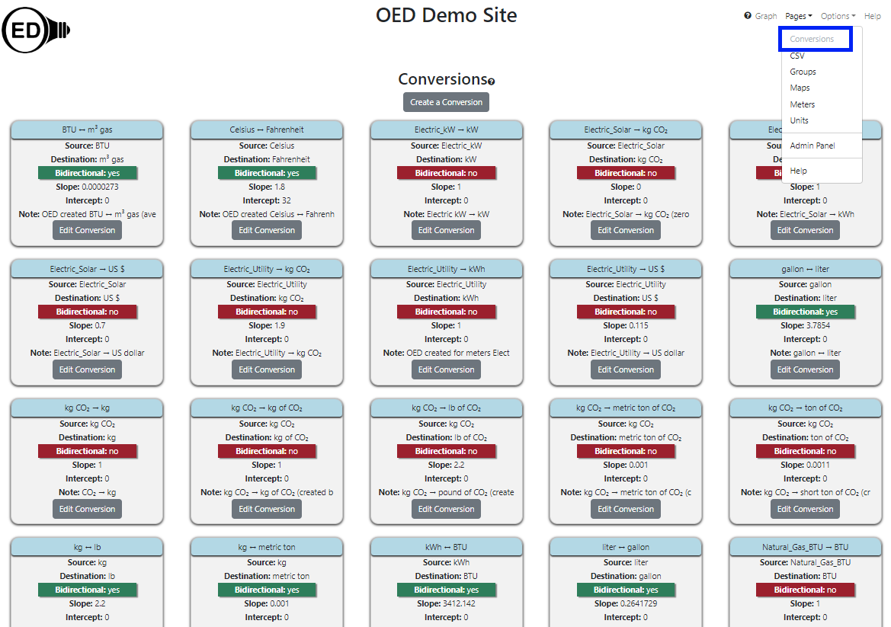

The admin conversion viewing page allows admin users to see all the conversions on an OED site. It is accessed from the "Pages" dropdown menu by clicking "Conversions" as shown in the following figure (highlighted in the blue rectangle where "Conversions" is grayed out since it has already been clicked). This page also allows admins to create and edit conversions. Further information on conversions is available.

All information shown on this page is based upon the help example.
As shown in the figure above, each conversion has its own card to show information about that conversion. The cards are sorted from left to right and top to bottom by the source unit's identifier and the destination unit's identifier if the source identifier is the same. Each card contains the following information:
In addition, there is a "Create a Conversion" button near the top of the page that allows one to create a new conversion.
None